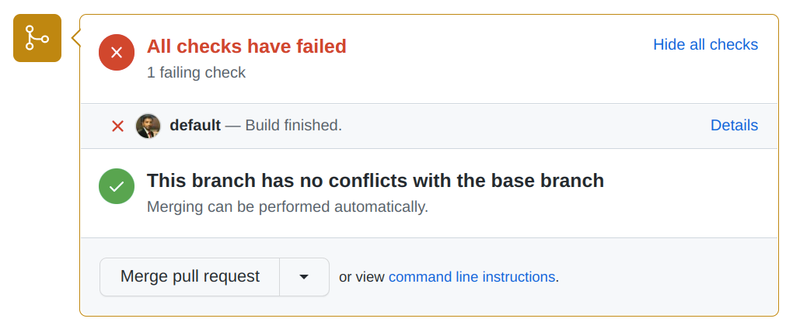

GitHub Pull Request hook integration with Jenkins
Reference Link: https://plugins.jenkins.io/ghprb/
General Guidline
If facing an issue, it is better to launch the Jenkins from running the .war file (which is obtained by building the Jenkins github repository) in terminal (which is mostly bash in case of linux) and observing the terminal's output. For example if a webhook is not created, the GUI may not show anything but the terminal will most probably print a message showing the reason for this behavior.
GitHub Pull Request Builder Plugin
In version control, it is better to check the changes and run tests before the changes are merged into main branch. Sometimes those changes can be enormous to check. So it becomes difficult for requested reviewer of the pull request to check all the changes and run tests on them manually. For that purpose, it is better to automate the process so that whenever a pull request is generated, all the tests are triggered and based on the results, the reviewer decides whether or not to merge the branch with main.
This can be achieved using Jenkins' Github Pull Request Builder plugin.
Specifications at the time of documentation
Operating System: Linux
Distribution: Ubuntu
Release: Focal (also known as 20.04)
Jenkins version: 2.371 (can be seen in config.xml)
Github Webhook Builder version: 1.42.2
Pre-Requisites
- Jenkins.
- Git Plugin
- GitHub Plugin
- Github Pull Request Builder Plugin
- Github account and repository with permission to generate a pull request to merge the branch.
Setting up Jenkins configuration
- Install the above mentioned plugins from
Dashboard > Manage Jenkins > Manage Plugins > Available Plugins. - Go to
Dashboard > Manage Jenkins > Configure System. - Scroll down to
Github Pull Request Builder. - Leave
GitHub Server API URLandJenkins URL overrideas it is. - In
Credentials, click on add and selectJenkinsfrom drop down. - Select
KindasSecret text. - In
Secret, add GitHub Personal authentication token which can be acquired from GitHub account settings. - Add some safe description to remind what these credentials are about otherwise jenkins use a lot of credentials and it gets difficult to keep account of them.
- Leave
IDempty. - Click on
Add. - Now select the added credentials from the drop down menu of
Credentials. - Click on
Test Credentials.... - Check
Test basic connection to GitHub. - Click on
Connect to API. This will show the messageConnected to <API_URL> as <Name_of_GitHub_user>. - Other settings can be left empty.
- Click on save.
Setting up Jenkins job
In this documentation, Pipeline job will be used, but any job is expected to work fine with these settings. For this documentation it is considered that the jenkinsfile for building the pipeline is present in the repository which is to be built.
- Go to
Dashboardand clickNew Item. - Enter a Job name (here it will be
github_PR_webhook). - Click
OK. It will navigate to the job's configuration page. - Add a
Descriptionof choice. - Scroll down and check
GitHub project. Add the URL of GitHub repository. Here the URL of the repository should be added without.gitextention. This is important that the person who is creating pull request should be either inadmin listorwhitelistbecause otherwise, the webhook will not be created. - Scroll down to
Build Triggerssection. - Check
GitHub Pull Request Builder. This will open further configurations for this option.- Leave
GitHub API credentials. - Add a GitHub admin's username in the
Admin list. This is important becaue otherwise, the checks will not run on generating a pull request. - Check
Use github hooks for build triggering. - Click on
Advancedand inWhitelist Target Branchesadd the branch name for which, when a pull request is generated, the job is supposed to be trigger (here it ismain).
- Leave
- Scroll down to
Pipelinesection. - In
Definition, selectPipeline script from SCM.- Select
SCMasGitfrom drop down. - Enter the
Repository URLfrom GitHub. - Enter
Credentialswith access to this repository (This is optional if the repository is public). - Under
Advanced, enterRefspecas+refs/pull/*:refs/remotes/origin/pr/*[^note]. - If the tests are to be run on actual commit in the pull request then, under
Branches to buildsection, inBranch Specifier, enter${ghprbActualCommit}[^note]. - Leave other settings as it is.
- Select
- In
Script Path, add the path and name of thejenkinsfilewhich is present in GitHub repository. - Uncheck
Lightweight checkout[^note1] - Click
Applyand thenSave. - After saving the job, a webhook should be created automatically in GitHub if the credentials provided in the settings are correct.
Verifying if the procedure
- In the GitHub repository, add another branch aside from
main. - For this, expand
mainand click onView all branches. - Click on
New Branch, and insert a name. - After a new branch is created, select new branch instead of
mainin repository page. - Add some changings to either of the file (even adding a space is enough).
- Commit Changes.
- Create a Pull request.
- Now after checking the merge conflicts, the checks will run their results will be shown with pull request (as can be seen in the image below).
NOTE: The Jenkinfile will run present in the pull request and not in the main branch.

- Clicking on the
Detailsnavigates the user to the Jenkins Job result page where the console output and each stage can be seen.
[^note]:
This point is taken from the jenkins GitHub Pull Request Builder plugin documentation at https://plugins.jenkins.io/ghprb/
[^note1]:
This is an issue mentioned in the documentation of Github Pull Request Builder plugin at https://plugins.jenkins.io/ghprb/.